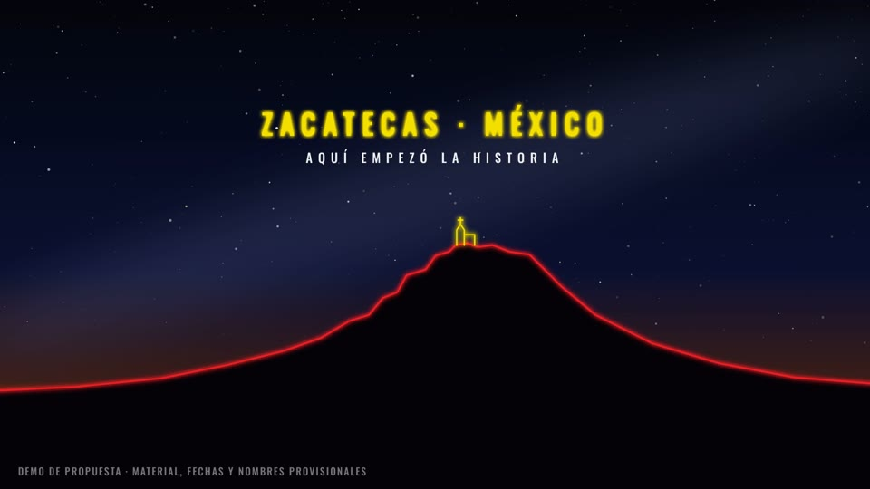

1 · Origen
0:00 – 0:40Cielo estrellado sobre Zacatecas, generado desde cero. Una línea de neón traza la silueta de la Bufa y la capilla; aparecen las luces de la ciudad y el texto de lugar. Sin logo todavía.
- Música
- Atmósfera, pad y tensión creciente; un riser al final entrega al acto 2.
- Material
- Ninguno. Todo es gráfico. Sustituye el stock de la Vía Láctea.